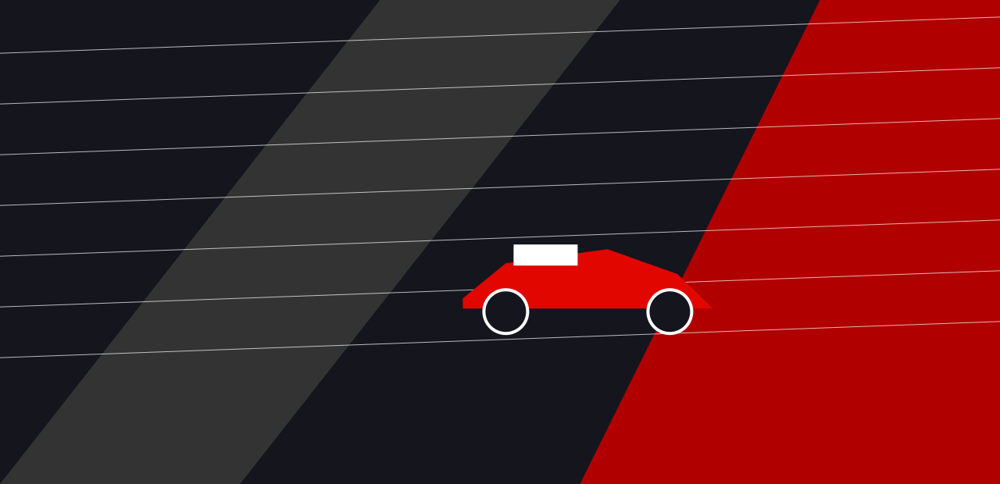
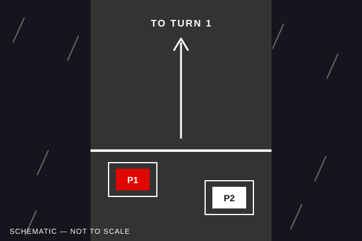
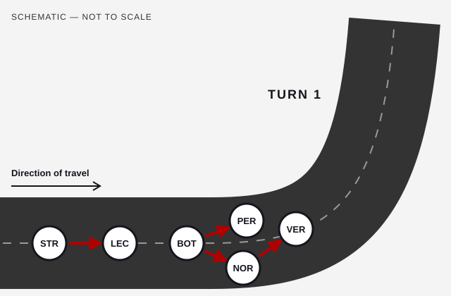
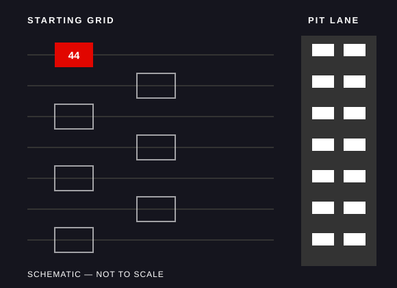

StoryCast Original / 001
When Everything Goes Wrong.
The 2021 Hungarian Grand Prix.
A wet start, a multi-car collision and the strangest restart of the season transformed the Hungarian Grand Prix.
What followed was a race of strategy, unexpected opportunities and an unlikely winner.


Original Explainer
Watch the Race Unfold
Experience the defining moments of the 2021 Hungarian Grand Prix through an original narrated race explainer.
- 1:30
- English captions
- Full transcript
A 90-second original explainer. Seven illustrated scenes follow the race from the wet start and the Turn 1 collisions to the lone restart, Ocon's victory and the official podium.
English captions are on by default. Narrated by a synthetic voice, with no music. Read the full transcript with scene descriptions.
Before the start
Chapter 1: It Started with Rain.
The Hungaroring is a tight, twisting circuit near Budapest where overtaking is notoriously difficult, so starting position matters. Lewis Hamilton had taken pole position for Mercedes, with his team-mate Valtteri Bottas alongside him on the front row.
Then the rain arrived. Showers fell just before the start, and every driver lined up on intermediate tyres, which are designed for a wet but not flooded track.
On a damp surface, grip is unpredictable and braking distances grow longer. The run from the grid to Turn 1 ends in a heavy braking zone, with twenty cars arriving at once. Brake a fraction too late and there is very little room to recover.

- Cars arriving at Turn 1
- 20
- Tyre on every car
- Inters
Lap 1, Turn 1
Chapter 2: Then Everything Went Wrong.
Hamilton got away cleanly. Behind him, the pack funnelled towards the first corner, and Bottas misjudged his braking and ran into the back of Lando Norris's McLaren.
The impact pushed Norris into Max Verstappen's Red Bull. Bottas's Mercedes then slid on into Sergio Pérez, ending the Red Bull driver's race on the spot. Verstappen was able to continue, but with heavy damage to his car.
Further back, a separate incident unfolded. Lance Stroll braked late, ran onto the grass and hit Charles Leclerc's Ferrari, which was then pushed into Daniel Ricciardo, sending the McLaren spinning.
With debris across the circuit, the safety car was deployed. After two laps, the race was suspended under a red flag.

The Moment That Changed Everything.
Watch the dramatic opening-lap collision that reshaped the 2021 Hungarian Grand Prix.

Official Formula 1 video / YouTube / 1:10
Formula 1's own clip of the first-lap collisions at Turn 1, the incidents described in this chapter.
Opens on YouTube: this Formula 1 clip would not play when embedded in our tests. YouTube offers automatically generated English captions only; this chapter's text and diagram cover the same events.
Watch the Official Turn 1 Footage on YouTubeThe restart
Chapter 3: A Starting Grid of One.
During the red flag, the rain held off and the track began to dry.
Mercedes kept Hamilton on intermediate tyres. Every other team made the opposite call: at the end of the formation lap, all the cars behind Hamilton drove into the pit lane for slick, dry-weather tyres.
The result was one of the strangest sights in modern Formula 1. Hamilton lined up for the restart alone, the only car on the starting grid, while the rest of the field started from the pit lane.
He soon had to pit for slicks too, and he rejoined far down the order. The tyre decisions made in those few minutes reshaped the entire race.
- Car on the starting grid
- 1
- Cars starting from the pit lane
- 14
One car. One grid. One extraordinary moment.
01 Explore the diagram

02 Watch the footage

Official Formula 1 video / YouTube / 1:05
Formula 1's own clip of the restart, when Hamilton lined up alone on the grid and the rest of the field started from the pit lane.
Opens on YouTube: this Formula 1 clip would not play when embedded in our tests. YouTube offers automatically generated English captions only; the diagram and chapter text describe the same moment.
Watch Hamilton's Unusual Restart on YouTubeThe fight for the lead
Chapter 4: An Unlikely Leader.
When Hamilton pitted, the lead passed to Esteban Ocon. He had started eighth but had avoided the chaos at Turn 1, and his Alpine now led the race. Sebastian Vettel's Aston Martin followed closely behind.
Hamilton began working his way back through the field, but his recovery stalled behind Ocon's team-mate, Fernando Alonso. The two-time world champion defended hard for around ten laps, and every lap Hamilton spent behind him was a lap he could not use to close on the leaders.
Up front, Ocon stayed calm under sustained pressure from Vettel and kept the lead.
-
Esteban Ocon
Alpine
Led the race after the restart
-
Sebastian Vettel
Aston Martin
Chased Ocon for the win
-
Fernando Alonso
Alpine
Held Hamilton back
-
Lewis Hamilton
Mercedes
Recovered through the field
- Ocon's starting position
- P8
- Laps Alonso held Hamilton back (approx.)
- ~10
Lap 70 and after
Chapter 5: Against All Expectations.
Ocon held on to win. It was his first Formula 1 Grand Prix victory.
Vettel crossed the line second, with Hamilton third. After the race, however, officials could not obtain the required fuel sample from Vettel's car, and he was disqualified.
Hamilton was promoted to second in the official classification, and Carlos Sainz moved up to third.
Official podium
- First: Esteban Ocon Alpine
- Second: Lewis Hamilton Mercedes
- Third: Carlos Sainz Ferrari
Order across the line
- Esteban Ocon, Alpine
- Sebastian Vettel, Aston Martin (later disqualified)
- Lewis Hamilton, Mercedes
Vettel finished second on the road but was disqualified after the race, because officials could not obtain the required fuel sample from his car. The official classification is the result that stands.
Against all odds.
After 70 laps of extraordinary racing, Esteban Ocon claimed his first Formula 1 victory.

Official Formula 1 video / YouTube / 0:42
Formula 1's own clip of Esteban Ocon's maiden Grand Prix win for Alpine, published on race day. Vettel's disqualification came after the race, so any result in the clip may show the order on the road.
Opens on YouTube: this Formula 1 clip would not play when embedded in our tests. YouTube offers automatically generated English captions only; the official result is listed above.
Watch Ocon's Maiden Victory on YouTube“One moment can change an entire race.”
Race Timeline
The Race, Moment by Moment.
Open any moment to read more. Everything here is also covered in the chapters above.
-
Start Wet race start
Rain before the start meant every car began the race on intermediate tyres, with Hamilton on pole and Bottas alongside.
-
Turn 1 First-lap collisions
Bottas braked too late and hit Norris, who was pushed into Verstappen; Bottas also hit Pérez. Further back, Stroll hit Leclerc.
-
Lap 2 Red flag
After two laps behind the safety car, the race was suspended so the debris could be cleared.
-
Restart A grid of one
With the track drying, every car except Hamilton's pitted for slick tyres at the end of the formation lap. Hamilton restarted alone on the grid.
-
Lead change Ocon takes the lead
When Hamilton pitted for slicks, Ocon inherited the lead, with Vettel close behind.
-
Recovery Hamilton fights back
Hamilton climbed back through the field but was held up for around ten laps by Alonso's determined defence.
-
Lap 70 Ocon wins
Ocon crossed the line first to take his maiden Formula 1 victory, ahead of Vettel and Hamilton on the road.
-
After the race Vettel disqualified
Officials could not obtain the required fuel sample from Vettel's car, so he was disqualified. Hamilton was classified second and Sainz third.
Optional Interaction
Would You Stay Out or Pit?
The track is drying. You're leading the race. Would you stay on intermediate tyres or pit for dry-weather tyres?
You made the same call as Mercedes. Hamilton stayed on intermediates and took the restart alone from the grid. But the track was drying fast, and he soon had to pit for slick tyres, dropping far down the order.
You made the same call as every other team. Their cars started from the pit lane, behind Hamilton, but on slick tyres that suited the drying track. That decision helped put Ocon in the lead.
This is an educational question, not a race simulation. Neither choice guaranteed a result: the outcome depended on the weather, traffic and many other factors.
Transcript
Full Story Transcript.
Transcript of the explainer video above, with a description of what appears on screen in each scene. Narrated by a synthetic voice; there is no music or other sound.
-
On screen: Title card over an original illustration of a red racing car on a dark, streaked track. Text reads: “When Everything Goes Wrong. The Hungarian Grand Prix, 1 August 2021, Hungaroring.”
Narrator: The Hungarian Grand Prix, the first of August, 2021.
-
On screen: Schematic of the wet starting grid, captioned “Rain before the start”. A car marked P1 sits on pole with a car marked P2 beside it, rain streaks fall, and an arrow points ahead to Turn 1.
Narrator: Rain fell shortly before the start. Every car lined up on intermediate tyres, built for a wet track. Lewis Hamilton started from pole, with Valtteri Bottas alongside.
-
On screen: Schematic of the first corner, captioned “Chaos at Turn 1”. Arrows show Bottas (BOT) hitting Norris (NOR), Norris pushed into Verstappen (VER) and Bottas hitting Pérez (PER). Further back, an arrow shows Stroll (STR) hitting Leclerc (LEC).
Narrator: On the run to Turn 1, Bottas braked too late. He hit Lando Norris, who was pushed into Max Verstappen. Bottas then slid into Sergio Pérez. Further back, Lance Stroll hit Charles Leclerc.
-
On screen: A red flag card reading “Red flag”, with the line “Race stopped, track begins to dry”.
Narrator: After two laps behind the safety car, the race was stopped under a red flag. During the pause, the track began to dry.
-
On screen: Schematic of the restart, captioned “A starting grid of one”. A single red car numbered 44 sits alone on an empty starting grid while fourteen cars queue in the pit lane.
Narrator: Mercedes kept Hamilton on intermediate tyres. Every other car came into the pit lane for slick tyres. Hamilton took the restart alone, the only car on the starting grid.
-
On screen: Four driver cards, captioned “An unlikely leader”: Esteban Ocon, Alpine, leading; Sebastian Vettel, Aston Martin, chasing; Fernando Alonso, Alpine, defending; Lewis Hamilton, Mercedes, recovering.
Narrator: When Hamilton pitted for slicks, Esteban Ocon took the lead. Sebastian Vettel stayed close behind him. Fernando Alonso held Hamilton back for around ten laps.
-
On screen: The official podium: 1st Esteban Ocon, Alpine; 2nd Lewis Hamilton, Mercedes; 3rd Carlos Sainz, Ferrari. A note reads: “Vettel finished second on the road but was disqualified after the race.”
Narrator: Ocon crossed the line first, for his first Formula 1 victory. Vettel finished second on the road, but was later disqualified. Officials could not obtain the required fuel sample from his car. The official podium: Ocon, Hamilton and Carlos Sainz.
-
On screen: End card: “StoryCast. Independent, accessible multimedia racing stories. Independent educational project, not affiliated with Formula 1. Narration: synthetic voice.”
The Full Picture
Experience the Race Highlights.
Seven minutes of official race highlights from Formula 1, for further viewing once you have followed the story.
This is supplementary external content. For a captioned, fully transcribed account of the race, watch our original explainer.

Official Formula 1 video / YouTube / 7:18
Formula 1's highlights of the whole race, from the wet start to the chequered flag.
Opens on YouTube: this Formula 1 video would not play when embedded in our tests. YouTube lists English captions for it; the chapters and timeline on this page cover the same race.
Watch Official Race Highlights on YouTube